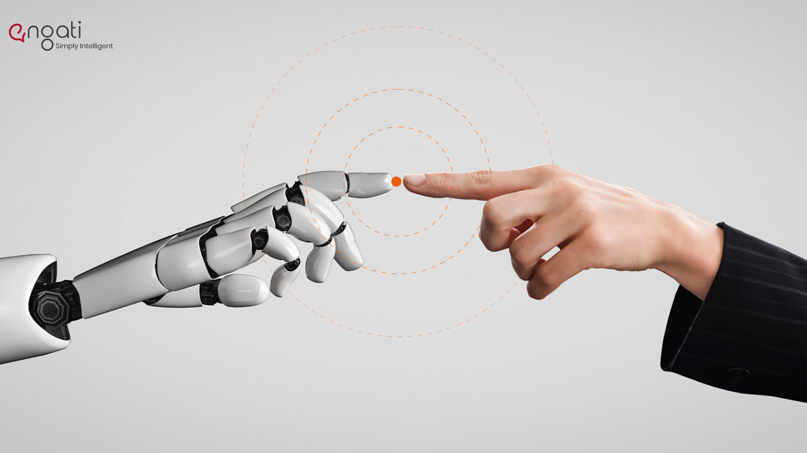
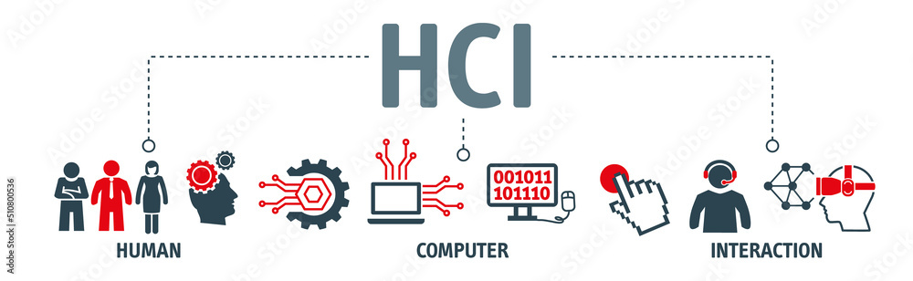
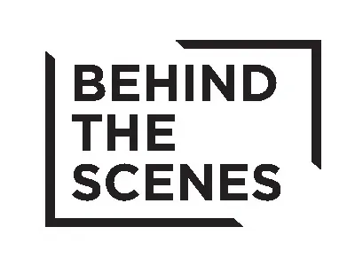

AI-Powered Features
Our virtual mouse uses advanced AI algorithms to interpret hand gestures and provide precise, real-time control. Features include:
- Object Tracking
- Gesture Recognition
- High Accuracy and Speed
Human-Computer Interaction
Purpose: To create a seamless and intuitive way to control the system without physical contact.
Tech Used: Libraries like pyautogui, pynput, or pycaw.
Function: Translates gestures or voice into actual mouse movements, clicks, scrolls, system volume control, or application launch.
 Behind-the-Scenes Technology
Discuss the backend frameworks or libraries used (e.g., TensorFlow, PyTorch, OpenCV, or MediaPipe). Highlight innovations in the pipeline, such as upcoming AI features or updates.
Performance Optimization

Our AI virtual mouse is designed for low CPU and GPU usage, ensuring smooth operation even on low-power devices.
Here’s how you can optimize it effectively: Efficient Frame Processing, Optimize Voice Recognition, Use Multithreading
Advanced Features
Customization: Ability to configure gestures for specific actions. Accessibility: Highlight how this technology empowers users with disabilities by providing hands-free control.